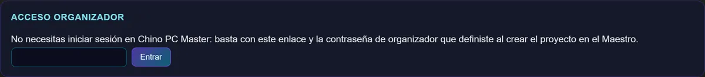
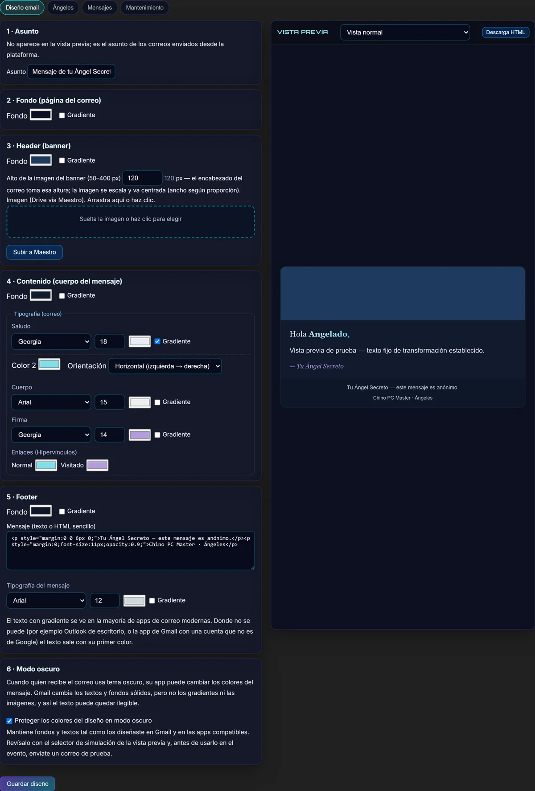
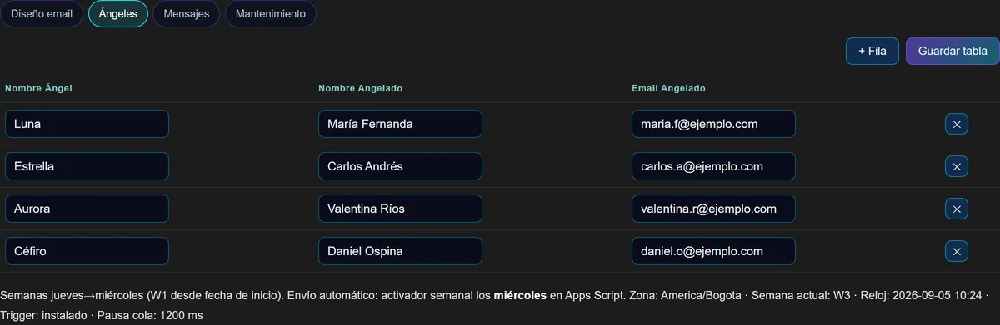
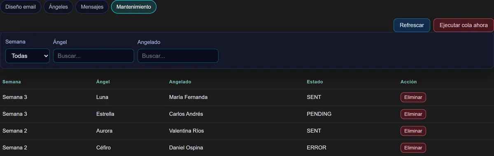
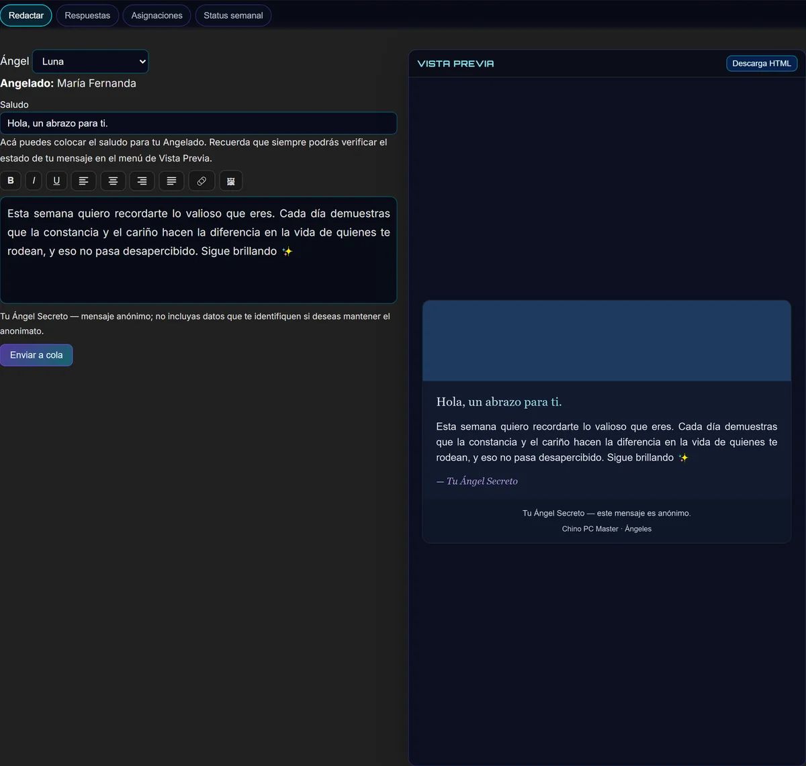
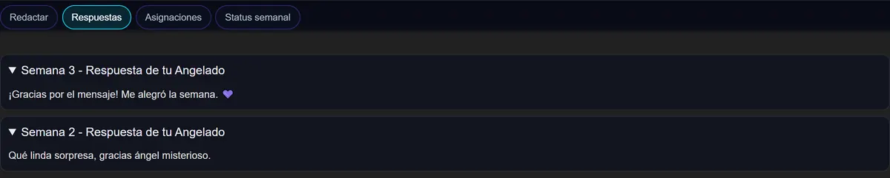
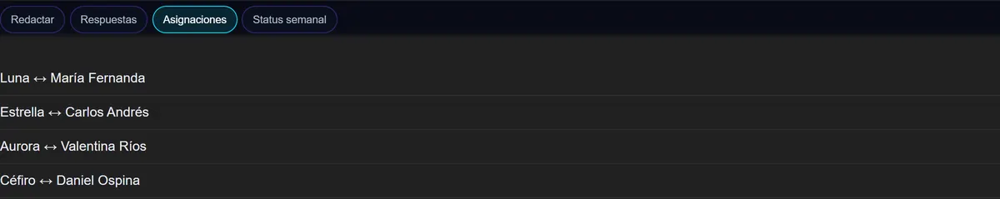
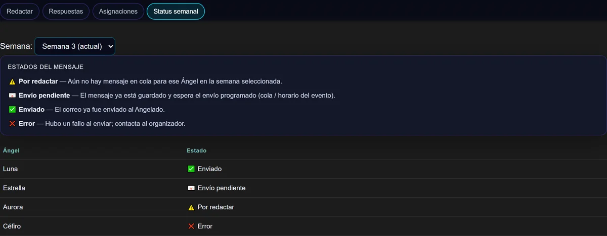
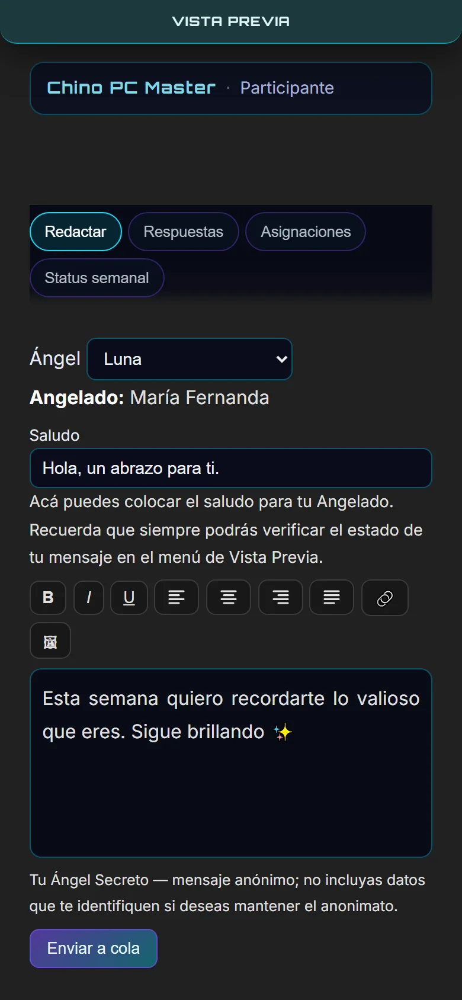

Capitanes
#a/<enlace>
Quien monta y conduce el evento. Solo el enlace y la contraseña del proyecto: no necesita cuenta en el sitio.
Juego de ángel secreto por correo, con mensajes semanales anónimos. El capitán diseña el email del evento, los ángeles escriben desde un enlace sin registrarse, y los correos salen automáticamente desde el Gmail del propio evento.
#a/<enlace>
Quien monta y conduce el evento. Solo el enlace y la contraseña del proyecto: no necesita cuenta en el sitio.
#u/<enlace>
Quienes juegan y escriben. Solo el enlace: ni registro, ni contraseña, ni app que instalar.
01 · Panel
Un enlace y una contraseña. Desde ahí el capitán controla el aspecto del correo, la lista de parejas y la cola de envíos.

Cinco bloques editables y un panel de previsualización que se actualiza mientras se toca cada control.



02 · Panel
Se abre el enlace y ya está. Cuatro pestañas, cero fricción.



Selector de semana y estado por cada Ángel, con la leyenda explicada dentro de la propia pantalla:

La vista previa se convierte en un panel flotante y el editor ocupa todo el ancho: pensado para escribir desde el móvil, que es donde el ángel realmente está.

03 · Cierre
Lo que hace que el juego funcione solo, semana tras semana, sin perseguir a nadie por WhatsApp.
Ni registro, ni contraseña, ni app que instalar. Abre el enlace y escribe.
Colores, gradientes, banner propio y tipografía por sección, con vista previa fiel y sin tocar HTML.
El remitente es la cuenta del propio evento: nada llega desde una dirección desconocida.
Activador semanal y cola de mensajes; el capitán solo interviene si quiere adelantar un envío.
Cada ángel ve si su mensaje está por redactar, pendiente, enviado o con error, semana por semana.
El mensaje se guarda en cola y se puede revisar antes de que salga; el capitán puede borrarlo si hizo falta.
El juego no se rompe por descuido: avisos explícitos y datos del angelado fuera del mensaje.
La misma app en móvil, con la vista previa en un panel flotante y el editor a pantalla completa.
¿Quieres montar un Ángeles Secretos para tu equipo, tu familia o tu comunidad?
Escríbeme o por WhatsApp: +506 6200 5921Todas las capturas se tomaron sobre la app real con datos de demostración: nombres, correos y enlaces son ficticios. Ninguna pantalla contiene información de participantes reales.